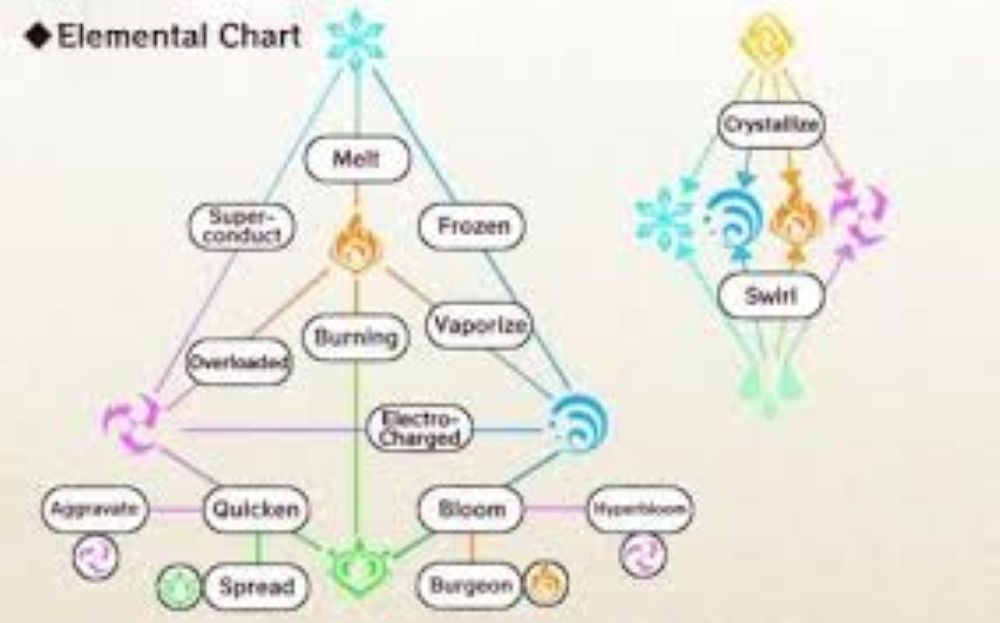

Want to learn your vision?
click hereVisions!
In Genshin Impact, a vision is a jeweled amulet bestowed by the gods (Celestia) to individuals in Teyvat who possess strong ambitions and the potential for godhood, granting them the ability to channel one of the seven elemental powers (Pyro, Hydro, Cryo, Electro, Anemo, Geo, Dendro) and fight. These "allogenes" receive their Vision when their fervent desires align with a specific moment and elemental virtue, helping them overcome obstacles to achieve their goals, though the exact criteria remain mysterious.
Reactions !!
Elemental Reactions are triggered by applying certain combinations of elemental effects on a target (enemies, players, or objects). When an element is applied to a target, it will create an elemental aura that decays over time. Elemental Reactions will occur when a second element is applied onto a target with an existing elemental aura. Triggering elemental reactions will consume the existing aura by varying amounts depending on the type of reaction triggered and the gauge units of the triggering element. This will shorten the existing aura's duration or completely remove it.| Element | Meaning | Color | Power |
|---|---|---|---|
| Pyro | This vision is given to people who have a burning passion for something and feel the need to surpass it or themselfs | Red | Fire |
| Hydro | This vision is given to people who have a strong sence of justice or moral code | Blue | Water |
| Cyro | This vision is given to people are trying to escape conflict or feel unsure and incaplable of there abilities. | Cyan | Ice |
| Electro | This vision is givin to those who have been on the egde of death or have been considerd an "outcast" or "abnormal" | Purple | Thunder |
| Anemo | This vision is given to those who are trying to escape from something. Guilt, responsiblity, sin, ect or the desire for freedom | Teal | Wind |
| Geo | This vision is given to those who overcome many challanges. Despite the odds being stacked against them. | Gold | Earth |
| Dendro | This vision is given to shoe who take risks in order to obtain knowlegde and an understanding of something or someone. | Green | Nature |
